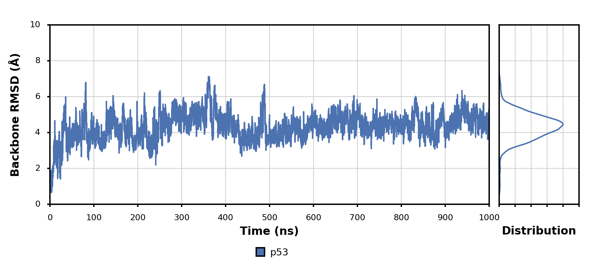
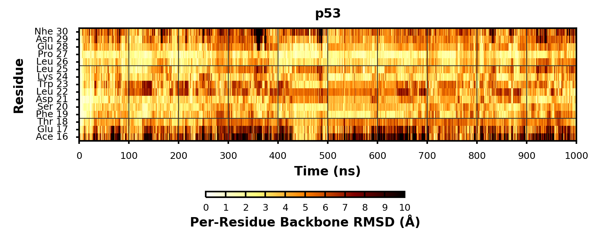
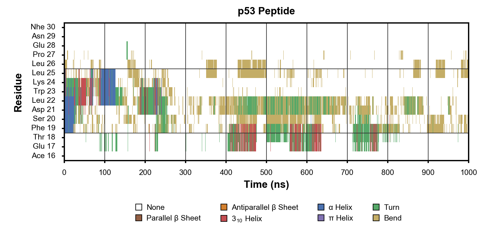

Figure Managers¶
Moldynplot includes several figure managers that build on
FigureManager
will additions specific for molecular dynamics simulation data.
CorrFigureManager¶
Generates one or more correlation figures to specifications in a YAML file.
-
class
moldynplot.CorrFigureManager.CorrFigureManager(*args, **kwargs)¶ Bases:
moldynplot.myplotspec.FigureManager.FigureManagerManages the generation of correlation figures.
Initializes.
Parameters: - defaults (string, dict, optional) – Default arguments; may be a yaml string, path to a yaml file, or a dictionary; if not provided pulled from self.defaults
- args (tuple) – Additional positional arguments
- kwargs (dict) – Additional keyword arguments
-
draw_dataset(*in_args, **in_kwargs)¶ Draws dataset
HSQCFigureManager¶
Generates one or more HSQC figures to specifications provided in a YAML file.
-
class
moldynplot.HSQCFigureManager.HSQCFigureManager(*args, **kwargs)¶ Bases:
moldynplot.myplotspec.FigureManager.FigureManagerManages the generation of HSQC figures.
Initializes.
Parameters: - defaults (string, dict, optional) – Default arguments; may be a yaml string, path to a yaml file, or a dictionary; if not provided pulled from self.defaults
- args (tuple) – Additional positional arguments
- kwargs (dict) – Additional keyword arguments
-
get_contour_levels(I, cutoff=0.9875, n_levels=10, min_level=None, max_level=None, **kwargs)¶ Generates contour levels.
Parameters: - I (ndarray) – Intensity
- cutoff (float) – Proportion of Intensity below minimum level
- n_levels (int) – Number of contour levels
- min_level (float) – Minimum contour level
- max_level (float) – Maximum contour level; default = max(I)
Returns: (ndarray) – levels
-
draw_dataset(*in_args, **in_kwargs)¶ Draws a dataset on a subplot.
Parameters: - subplot (Axes) – Axes on which to draw
- draw_pdist (bool) – Draw contour
- draw_fill_between (bool) – Fill between specified region for this dataset
- draw_mean (bool) – Draw point at mean value of this dataset
- dataset_kw (dict) – Keyword arguments used to passed to
load_dataset() - plot_kw (dict) – Keyword arguments used to configure plot
- fill_between_kw (dict) – Keyword arguments used to configure fill_between
- pdist_kw (dict) – Keyword arguments using to configure probability distribution
- verbose (int) – Level of verbose output
- kwargs (dict) – Additional keyword arguments
MDGXFigureManager¶
Generates one or more MDGX figures to specifications provided in a YAML file.
-
class
moldynplot.MDGXFigureManager.MDGXFigureManager(*args, **kwargs)¶ Bases:
moldynplot.myplotspec.FigureManager.FigureManagerManages the generation of MDGX figures.
Initializes.
Parameters: - defaults (string, dict, optional) – Default arguments; may be a yaml string, path to a yaml file, or a dictionary; if not provided pulled from self.defaults
- args (tuple) – Additional positional arguments
- kwargs (dict) – Additional keyword arguments
-
draw_dataset(*in_args, **in_kwargs)¶
PDistFigureManager¶
Generates one or more probability distribution figures to specifications in a YAML file.
-
class
moldynplot.PDistFigureManager.PDistFigureManager(*args, **kwargs)¶ Bases:
moldynplot.myplotspec.FigureManager.FigureManagerManages the generation of probability distribution figures.
Initializes.
Parameters: - defaults (string, dict, optional) – Default arguments; may be a yaml string, path to a yaml file, or a dictionary; if not provided pulled from self.defaults
- args (tuple) – Additional positional arguments
- kwargs (dict) – Additional keyword arguments
-
draw_dataset(*in_args, **in_kwargs)¶ Loads a dataset and draws it on a subplot.
Loaded dataset should have attribute pdist_df.
Parameters: - subplot (Axes) –
Axeson which to draw - dataset_kw (dict) – Keyword arguments passed to
load_dataset - plot_kw (dict) – Keyword arguments passed to methods of
Axes - column (str) – Column within pdist_df to use
- draw_fill_between (bool) – Fill between specified region
- fill_between_kw (dict) – Keyword arguments used to configure
call to
fill_between - fill_between_kw[x] (list, ndarray) – x values passed to
fill_between - fill_between_kw[ylb] (list, ndarray) – y lower bound values
passed to
fill_between - fill_between_kw[yub] (list, ndarray) – y upper bound values
passed to
fill_between - draw_pdist (bool) – Draw probability distribution
- pdist_kw (dict) – Keyword arguments using to configure call to
plot - draw_mean (bool) – Draw point at mean value
- mean_kw (dict) – Keyword arguments used to configure call to
plot - verbose (int) – Level of verbose output
- kwargs (dict) – Additional keyword arguments
- subplot (Axes) –
SAXSFigureManager¶
Generates one or more time series figures to specifications in a YAML file.
-
class
moldynplot.SAXSFigureManager.SAXSFigureManager(*args, **kwargs)¶ Bases:
moldynplot.myplotspec.FigureManager.FigureManagerManages the generation of time series figures
Initializes.
Parameters: - defaults (string, dict, optional) – Default arguments; may be a yaml string, path to a yaml file, or a dictionary; if not provided pulled from self.defaults
- args (tuple) – Additional positional arguments
- kwargs (dict) – Additional keyword arguments
SequenceFigureManager¶
Generates one or more sequence figures to specifications in a YAML file.
-
class
moldynplot.SequenceFigureManager.SequenceFigureManager(*args, **kwargs)¶ Bases:
moldynplot.myplotspec.FigureManager.FigureManagerManages the generation of sequence figures.
Initializes.
Parameters: - defaults (string, dict, optional) – Default arguments; may be a yaml string, path to a yaml file, or a dictionary; if not provided pulled from self.defaults
- args (tuple) – Additional positional arguments
- kwargs (dict) – Additional keyword arguments
StateProbFigureManager¶
Generates one or more state probability figures to specifications in a YAML file.
-
class
moldynplot.StateProbFigureManager.StateProbFigureManager(*args, **kwargs)¶ Bases:
moldynplot.myplotspec.FigureManager.FigureManagerClass to manage the generation of probability distribution figures
Initializes.
Parameters: - defaults (string, dict, optional) – Default arguments; may be a yaml string, path to a yaml file, or a dictionary; if not provided pulled from self.defaults
- args (tuple) – Additional positional arguments
- kwargs (dict) – Additional keyword arguments
-
draw_dataset(*in_args, **in_kwargs)¶ Draws a dataset.
Parameters: - subplot (Axes) – Axes on which to draw
- x (float) – X coordinate of bar
- label (str, optional) – Dataset label
- color (str, list, ndarray, float, optional) – Dataset color
- bar_kw (dict, optional) – Additional keyword arguments passed to subplot.plot()
- handles (OrderedDict, optional) – Nascent OrderedDict of [labels]: handles on subplot
- kwargs (dict) – Additional keyword arguments
TimeSeriesFigureManager¶
Generates one or more time series figures to specifications in a YAML file.
-
class
moldynplot.TimeSeriesFigureManager.TimeSeriesFigureManager(*args, **kwargs)¶ Bases:
moldynplot.myplotspec.FigureManager.FigureManagerManages the generation of time series figures.
Initializes.
Parameters: - defaults (string, dict, optional) – Default arguments; may be a yaml string, path to a yaml file, or a dictionary; if not provided pulled from self.defaults
- args (tuple) – Additional positional arguments
- kwargs (dict) – Additional keyword arguments
-
draw_dataset(*in_args, **in_kwargs)¶ Draws a dataset on a subplot.
Loaded dataset should have attribute timeseries_df
Parameters: - subplot (Axes) –
Axeson which to draw - dataset_kw (dict) – Keyword arguments passed to
load_dataset - plot_kw (dict) – Keyword arguments passed to methods of
Axes - draw_plot (bool) – Draw plot
- draw_pdist (bool) – Draw probability distribution
- draw_fill_between (bool) – Fill between specified region for this dataset
- draw_mean (bool) – Draw point at mean value value of probability distribution
- verbose (int) – Level of verbose output
- kwargs (dict) – Additional keyword arguments
- subplot (Axes) –
TimeSeries2DFigureManager¶
Generates one or more 2D time series figures to specifications in a YAML file.
-
class
moldynplot.TimeSeries2DFigureManager.TimeSeries2DFigureManager(*args, **kwargs)¶ Bases:
moldynplot.myplotspec.FigureManager.FigureManagerManages the generation of 2D time series figures.
 Initializes.
Parameters: - defaults (string, dict, optional) – Default arguments; may be a yaml string, path to a yaml file, or a dictionary; if not provided pulled from self.defaults
- args (tuple) – Additional positional arguments
- kwargs (dict) – Additional keyword arguments